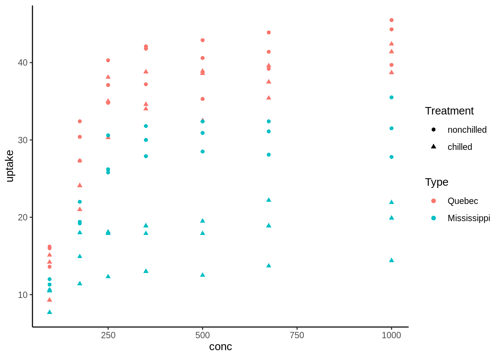
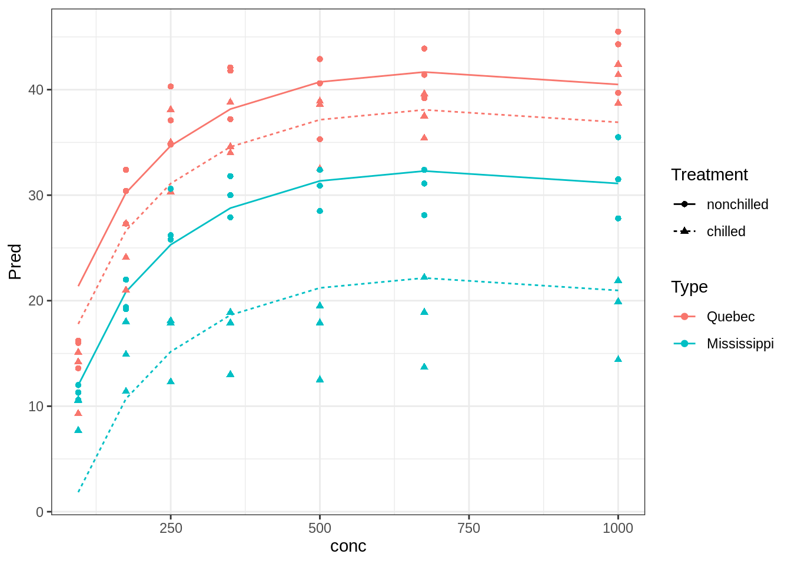
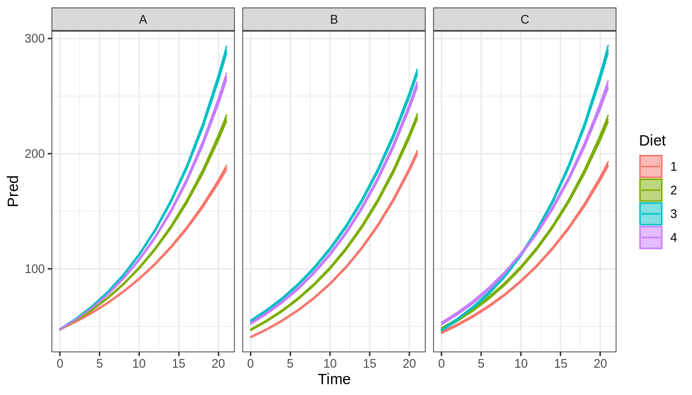
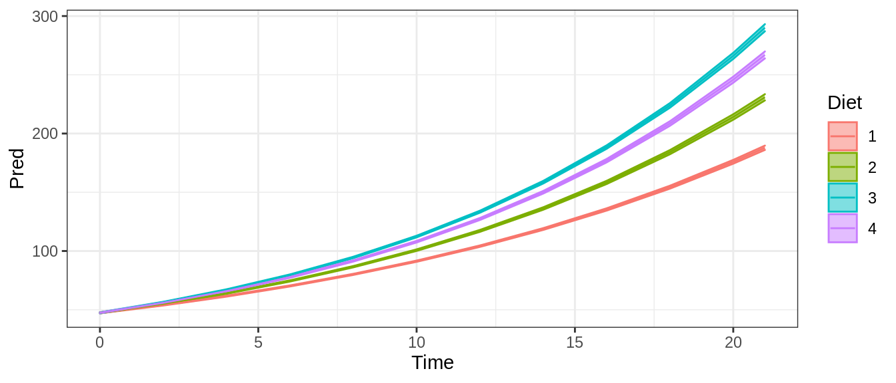

Capítulo 4 Automatización de la seleccion de modelos
4.1 Paquetes necesarios para este capítulo
Para este capitulo necesitas tener instalado los paquetes tidyverse (Wickham 2019), broom (Robinson and Hayes 2020), lme4 (Bates et al. 2015) y MuMIn (Bartoń 2019)
4.1.1 Presentación html
Puedes seguir la clase de los videos en el siguiente link
y ver la clase en vivo desde las 20:30 horas el día martes 12 de Mayo del 2020 a continuación
4.2 Variables fijas vs aleatorias
Tanto en los modelos lineales como en los GLM, siempre asumimos que todas las variables son fijas, esto es que toda variable tiene un efecto predecible y preciso de como afectará nuestro resultado final. Hoy introduciremos los modelos lineales mixtos y modelos generalizados mixtos, los cuales tienen variables fijas y aleatorias
Estas se definen a continuación:
- Fijas (continuas o categóricas)
- Se espera que tengan una influencia predecible y sistemática en sobre lo que queremos explicar. Además, si es que son variables categóricas usan todos (o casi todos) los niveles de un factor (Ejemplo genero)
Aleatorias
- Se espera que su influencia sea impredecible e idiosincratica. Además no se usan todos los niveles de un factor (todos los individuos)
4.3 Ejemplo CO2

Para explicar los modelos lineales mixtos, usaremos una base de datos de un experimento con plantas de la misma especie (Potvin, Lechowicz, and Tardif 1990), la base de datos podemos verla entera en la tabla ?? y observar las relaciones en le figura ??. En este experimento distinas plantas fueron expuestas a distintas concentraciones de \(CO_2\), pero anteriormente fueron tratadas o no con temperaturas bajas. Este tratamiento está codificado en la columna Treatment. Además de esto tenemos que hay plantas provenientes de Mississippi y de Quebec y finalmente tenemos la identidad de las plantas en la variable Plant
| Plant | Type | Treatment | conc | uptake |
|---|---|---|---|---|
| Qn1 | Quebec | nonchilled | 95 | 16.0 |
| Qn1 | Quebec | nonchilled | 175 | 30.4 |
| Qn1 | Quebec | nonchilled | 250 | 34.8 |
| Qn1 | Quebec | nonchilled | 350 | 37.2 |
| Qn1 | Quebec | nonchilled | 500 | 35.3 |
| Qn1 | Quebec | nonchilled | 675 | 39.2 |
| Qn1 | Quebec | nonchilled | 1000 | 39.7 |
| Qn2 | Quebec | nonchilled | 95 | 13.6 |
| Qn2 | Quebec | nonchilled | 175 | 27.3 |
| Qn2 | Quebec | nonchilled | 250 | 37.1 |
| Qn2 | Quebec | nonchilled | 350 | 41.8 |
| Qn2 | Quebec | nonchilled | 500 | 40.6 |
| Qn2 | Quebec | nonchilled | 675 | 41.4 |
| Qn2 | Quebec | nonchilled | 1000 | 44.3 |
| Qn3 | Quebec | nonchilled | 95 | 16.2 |
| Qn3 | Quebec | nonchilled | 175 | 32.4 |
| Qn3 | Quebec | nonchilled | 250 | 40.3 |
| Qn3 | Quebec | nonchilled | 350 | 42.1 |
| Qn3 | Quebec | nonchilled | 500 | 42.9 |
| Qn3 | Quebec | nonchilled | 675 | 43.9 |
| Qn3 | Quebec | nonchilled | 1000 | 45.5 |
| Qc1 | Quebec | chilled | 95 | 14.2 |
| Qc1 | Quebec | chilled | 175 | 24.1 |
| Qc1 | Quebec | chilled | 250 | 30.3 |
| Qc1 | Quebec | chilled | 350 | 34.6 |
| Qc1 | Quebec | chilled | 500 | 32.5 |
| Qc1 | Quebec | chilled | 675 | 35.4 |
| Qc1 | Quebec | chilled | 1000 | 38.7 |
| Qc2 | Quebec | chilled | 95 | 9.3 |
| Qc2 | Quebec | chilled | 175 | 27.3 |
| Qc2 | Quebec | chilled | 250 | 35.0 |
| Qc2 | Quebec | chilled | 350 | 38.8 |
| Qc2 | Quebec | chilled | 500 | 38.6 |
| Qc2 | Quebec | chilled | 675 | 37.5 |
| Qc2 | Quebec | chilled | 1000 | 42.4 |
| Qc3 | Quebec | chilled | 95 | 15.1 |
| Qc3 | Quebec | chilled | 175 | 21.0 |
| Qc3 | Quebec | chilled | 250 | 38.1 |
| Qc3 | Quebec | chilled | 350 | 34.0 |
| Qc3 | Quebec | chilled | 500 | 38.9 |
| Qc3 | Quebec | chilled | 675 | 39.6 |
| Qc3 | Quebec | chilled | 1000 | 41.4 |
| Mn1 | Mississippi | nonchilled | 95 | 10.6 |
| Mn1 | Mississippi | nonchilled | 175 | 19.2 |
| Mn1 | Mississippi | nonchilled | 250 | 26.2 |
| Mn1 | Mississippi | nonchilled | 350 | 30.0 |
| Mn1 | Mississippi | nonchilled | 500 | 30.9 |
| Mn1 | Mississippi | nonchilled | 675 | 32.4 |
| Mn1 | Mississippi | nonchilled | 1000 | 35.5 |
| Mn2 | Mississippi | nonchilled | 95 | 12.0 |
| Mn2 | Mississippi | nonchilled | 175 | 22.0 |
| Mn2 | Mississippi | nonchilled | 250 | 30.6 |
| Mn2 | Mississippi | nonchilled | 350 | 31.8 |
| Mn2 | Mississippi | nonchilled | 500 | 32.4 |
| Mn2 | Mississippi | nonchilled | 675 | 31.1 |
| Mn2 | Mississippi | nonchilled | 1000 | 31.5 |
| Mn3 | Mississippi | nonchilled | 95 | 11.3 |
| Mn3 | Mississippi | nonchilled | 175 | 19.4 |
| Mn3 | Mississippi | nonchilled | 250 | 25.8 |
| Mn3 | Mississippi | nonchilled | 350 | 27.9 |
| Mn3 | Mississippi | nonchilled | 500 | 28.5 |
| Mn3 | Mississippi | nonchilled | 675 | 28.1 |
| Mn3 | Mississippi | nonchilled | 1000 | 27.8 |
| Mc1 | Mississippi | chilled | 95 | 10.5 |
| Mc1 | Mississippi | chilled | 175 | 14.9 |
| Mc1 | Mississippi | chilled | 250 | 18.1 |
| Mc1 | Mississippi | chilled | 350 | 18.9 |
| Mc1 | Mississippi | chilled | 500 | 19.5 |
| Mc1 | Mississippi | chilled | 675 | 22.2 |
| Mc1 | Mississippi | chilled | 1000 | 21.9 |
| Mc2 | Mississippi | chilled | 95 | 7.7 |
| Mc2 | Mississippi | chilled | 175 | 11.4 |
| Mc2 | Mississippi | chilled | 250 | 12.3 |
| Mc2 | Mississippi | chilled | 350 | 13.0 |
| Mc2 | Mississippi | chilled | 500 | 12.5 |
| Mc2 | Mississippi | chilled | 675 | 13.7 |
| Mc2 | Mississippi | chilled | 1000 | 14.4 |
| Mc3 | Mississippi | chilled | 95 | 10.6 |
| Mc3 | Mississippi | chilled | 175 | 18.0 |
| Mc3 | Mississippi | chilled | 250 | 17.9 |
| Mc3 | Mississippi | chilled | 350 | 17.9 |
| Mc3 | Mississippi | chilled | 500 | 17.9 |
| Mc3 | Mississippi | chilled | 675 | 18.9 |
| Mc3 | Mississippi | chilled | 1000 | 19.9 |
Partiremos con un ejemplo de un modelo lineal y un modelo lineal mixto en paralelo para empezar a trabajar. El modelo codificado como mod1 es un modelo lineal, en el cual asumimos que existirá un comportamiento logarítmico de la captación de \(CO2\), esto es, se saturará la relación
4.4 Selección
| (Intercept) | conc | I(log(conc)) | Treatment | Type | Treatment:Type | df | logLik | AICc | delta | weight |
|---|---|---|---|---|---|---|---|---|---|---|
| -57.247 | -0.025 | 17.789 |
|
|
|
8 | -230.705 | 479.331 | 0.000 | 0.963 |
| -55.608 | -0.025 | 17.789 |
|
|
NA | 7 | -235.188 | 485.850 | 6.519 | 0.037 |
| -59.037 | -0.025 | 17.789 | NA |
|
NA | 6 | -241.972 | 497.036 | 17.705 | 0.000 |
| -14.037 | NA | 8.484 |
|
|
|
7 | -241.168 | 497.809 | 18.478 | 0.000 |
| -12.398 | NA | 8.484 |
|
|
NA | 6 | -245.650 | 504.392 | 25.061 | 0.000 |
| -61.937 | -0.025 | 17.789 |
|
NA | NA | 6 | -246.728 | 506.546 | 27.215 | 0.000 |
| -65.367 | -0.025 | 17.789 | NA | NA | NA | 5 | -250.329 | 511.428 | 32.097 | 0.000 |
| -15.827 | NA | 8.484 | NA |
|
NA | 5 | -252.435 | 515.638 | 36.307 | 0.000 |
| -18.727 | NA | 8.484 |
|
NA | NA | 5 | -257.190 | 525.149 | 45.818 | 0.000 |
| -22.157 | NA | 8.484 | NA | NA | NA | 4 | -260.792 | 530.089 | 50.759 | 0.000 |
| 27.621 | 0.018 | NA |
|
|
|
7 | -267.614 | 550.702 | 71.371 | 0.000 |
| 29.260 | 0.018 | NA |
|
|
NA | 6 | -272.096 | 557.284 | 77.953 | 0.000 |
| 25.830 | 0.018 | NA | NA |
|
NA | 5 | -278.881 | 568.530 | 89.200 | 0.000 |
| 22.930 | 0.018 | NA |
|
NA | NA | 5 | -283.636 | 578.041 | 98.710 | 0.000 |
| 19.500 | 0.018 | NA | NA | NA | NA | 4 | -287.238 | 582.982 | 103.651 | 0.000 |
| 35.333 | NA | NA |
|
|
|
6 | -286.019 | 585.128 | 105.798 | 0.000 |
| 36.973 | NA | NA |
|
|
NA | 5 | -289.930 | 590.630 | 111.299 | 0.000 |
| 33.543 | NA | NA | NA |
|
NA | 4 | -296.656 | 601.819 | 122.488 | 0.000 |
| 30.643 | NA | NA |
|
NA | NA | 4 | -301.412 | 611.330 | 131.999 | 0.000 |
| 27.213 | NA | NA | NA | NA | NA | 3 | -305.013 | 616.327 | 136.996 | 0.000 |
4.5 Modelo
| term | estimate | std.error | statistic | group |
|---|---|---|---|---|
| (Intercept) | -57.247 | 7.867 | -7.277 | fixed |
| conc | -0.025 | 0.004 | -6.075 | fixed |
| I(log(conc)) | 17.789 | 1.622 | 10.970 | fixed |
| Treatmentchilled | -3.581 | 1.835 | -1.952 | fixed |
| TypeMississippi | -9.381 | 1.835 | -5.112 | fixed |
| Treatmentchilled:TypeMississippi | -6.557 | 2.595 | -2.527 | fixed |
| sd_(Intercept).Plant | 1.769 | NA | NA | Plant |
| sd_Observation.Residual | 3.667 | NA | NA | Residual |
4.6 Modelo

4.7 Cemento
- ¿Que problema tiene la siguiente base de datos para LMs o GLMs?
- Ejemplo base de datos
Cementde MuMIn

4.8 Como agrego eso a MuMIn
| CaAl | SiCa3 | Ca2AlFe | Ca2Si | |
|---|---|---|---|---|
| CaAl | 1.0000000 | 0.2285795 | -0.8241338 | -0.2454451 |
| SiCa3 | 0.2285795 | 1.0000000 | -0.1392424 | -0.9729550 |
| Ca2AlFe | -0.8241338 | -0.1392424 | 1.0000000 | 0.0295370 |
| Ca2Si | -0.2454451 | -0.9729550 | 0.0295370 | 1.0000000 |
4.9 Como agrego eso a MuMIn (cont)
| CaAl | SiCa3 | Ca2AlFe | Ca2Si | |
|---|---|---|---|---|
| CaAl | NA | NA | NA | NA |
| SiCa3 | TRUE | NA | NA | NA |
| Ca2AlFe | FALSE | TRUE | NA | NA |
| Ca2Si | TRUE | FALSE | TRUE | NA |
4.10 Como agrego eso a MuMIn (cont)
| (Intercept) | Ca2AlFe | Ca2Si | CaAl | SiCa3 | df | logLik | AICc | delta | weight |
|---|---|---|---|---|---|---|---|---|---|
| 52.58 | NA | NA | 1.47 | 0.66 | 4 | -28.16 | 69.31 | 0.00 | 0.84 |
| 103.10 | NA | -0.61 | 1.44 | NA | 4 | -29.82 | 72.63 | 3.32 | 0.16 |
| 131.28 | -1.20 | -0.72 | NA | NA | 4 | -35.37 | 83.74 | 14.43 | 0.00 |
| 72.07 | -1.01 | NA | NA | 0.73 | 4 | -40.96 | 94.93 | 25.62 | 0.00 |
| 117.57 | NA | -0.74 | NA | NA | 3 | -45.87 | 100.41 | 31.10 | 0.00 |
| 57.42 | NA | NA | NA | 0.79 | 3 | -46.04 | 100.74 | 31.42 | 0.00 |
| 81.48 | NA | NA | 1.87 | NA | 3 | -48.21 | 105.08 | 35.77 | 0.00 |
| 110.20 | -1.26 | NA | NA | NA | 3 | -50.98 | 110.63 | 41.31 | 0.00 |
| 95.42 | NA | NA | NA | NA | 2 | -53.17 | 111.54 | 42.22 | 0.00 |
4.11 Incluir además límite de numero de variables
options(na.action = "na.fail")
Selected <- dredge(GlobalMod, subset = smat, m.lim = c(0, floor(nrow(Cement)/10)))| (Intercept) | Ca2AlFe | Ca2Si | CaAl | SiCa3 | df | logLik | AICc | delta | weight |
|---|---|---|---|---|---|---|---|---|---|
| 117.57 | NA | -0.74 | NA | NA | 3 | -45.87 | 100.41 | 0.00 | 0.51 |
| 57.42 | NA | NA | NA | 0.79 | 3 | -46.04 | 100.74 | 0.33 | 0.43 |
| 81.48 | NA | NA | 1.87 | NA | 3 | -48.21 | 105.08 | 4.67 | 0.05 |
| 110.20 | -1.26 | NA | NA | NA | 3 | -50.98 | 110.63 | 10.22 | 0.00 |
| 95.42 | NA | NA | NA | NA | 2 | -53.17 | 111.54 | 11.13 | 0.00 |
4.12 Pregunta 1
- ¿Cual de estas relaciones es la que uno esperaría ver al finalizar el experimento?

00:40
- Respuesta: A
4.13 Pregunta 2
- ¿Cuál de estos códigos resultaría en el modelo que generaría este gráfico?

A <- glm(weight ~ Time + Diet, family = poisson)
B <- glm(weight ~ Time * Diet, family = poisson)
C <- glm(weight ~ Time + Time:Diet, family = poisson)00:40
4.14 Pregunta 2 (cont)
library(lme4)
ChickPoissMM1 <- glmer(weight ~ Time + Diet + (1 | Chick), family = poisson,
data = ChickWeight)
ChickPoissMM2 <- glmer(weight ~ Time + Time:Diet + (1 | Chick),
family = poisson, data = ChickWeight)
ChickPoissMM3 <- glmer(weight ~ Time + Time * Diet + (1 | Chick),
family = poisson, data = ChickWeight)4.15 Pregunta 3
- ¿Cuanto pesaria un pollo en el dia 10 en la dieta 2 basado en el modelo anterior?
| term | estimate | std.error | statistic | p.value | group |
|---|---|---|---|---|---|
| (Intercept) | 3.84 | 0.03 | 121.74 | 0 | fixed |
| Time | 0.07 | 0.00 | 63.72 | 0 | fixed |
| Time:Diet2 | 0.01 | 0.00 | 4.99 | 0 | fixed |
| Time:Diet3 | 0.02 | 0.00 | 12.59 | 0 | fixed |
| Time:Diet4 | 0.01 | 0.00 | 5.91 | 0 | fixed |
| sd_(Intercept).Chick | 0.21 | NA | NA | NA | Chick |
- A = 94.6324083
- B = 113.2955623
- C = 4.73
00:40
4.16 Pregunta 3 (cont)
## [1] 94.63241## [1] 113.2956## [1] 4.734.17 Pregunta 4
- ¿Cuál es el código que mejor representa este gráfico?

A <- glm(weight ~ Time + Diet, family = poisson)
B <- glm(weight ~ Time * Diet, family = poisson)
C <- glm(weight ~ Time + Time:Diet, family = poisson)00:40
4.18 Pregunta 5
- ¿Cuantas pendientes e interceptos espero ver en este modelo?

00:40
4.19 Pregunta 5 (cont)
| term | estimate | std.error | statistic | p.value |
|---|---|---|---|---|
| (Intercept) | 3.70 | 0.01 | 346.30 | 0 |
| Time | 0.08 | 0.00 | 125.25 | 0 |
| Diet2 | 0.15 | 0.01 | 13.69 | 0 |
| Diet3 | 0.30 | 0.01 | 29.46 | 0 |
| Diet4 | 0.26 | 0.01 | 24.88 | 0 |
References
Bartoń, Kamil. 2019. MuMIn: Multi-Model Inference. https://CRAN.R-project.org/package=MuMIn.
Bates, Douglas, Martin Mächler, Ben Bolker, and Steve Walker. 2015. “Fitting Linear Mixed-Effects Models Using lme4.” Journal of Statistical Software 67 (1): 1–48. https://doi.org/10.18637/jss.v067.i01.
Potvin, Catherine, Martin J Lechowicz, and Serge Tardif. 1990. “The Statistical Analysis of Ecophysiological Response Curves Obtained from Experiments Involving Repeated Measures.” Ecology 71 (4). Wiley Online Library: 1389–1400.
Robinson, David, and Alex Hayes. 2020. Broom: Convert Statistical Analysis Objects into Tidy Tibbles. https://CRAN.R-project.org/package=broom.
Wickham, Hadley. 2019. Tidyverse: Easily Install and Load the ’Tidyverse’. https://CRAN.R-project.org/package=tidyverse.